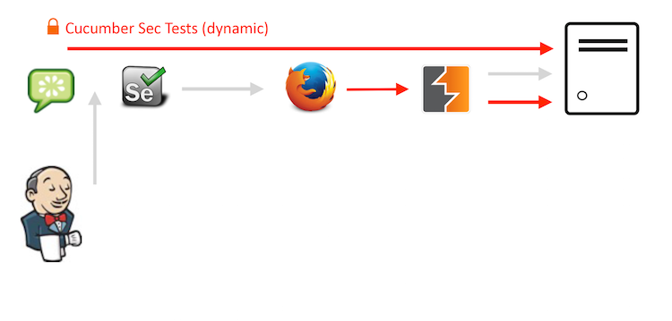
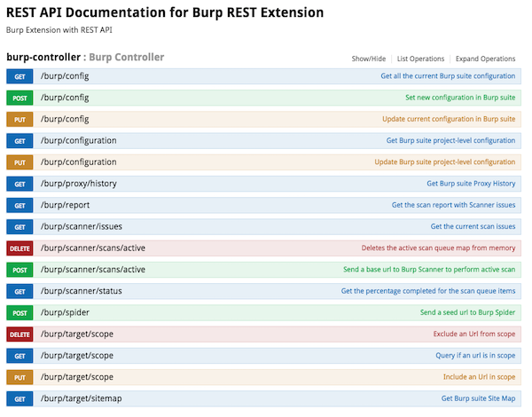
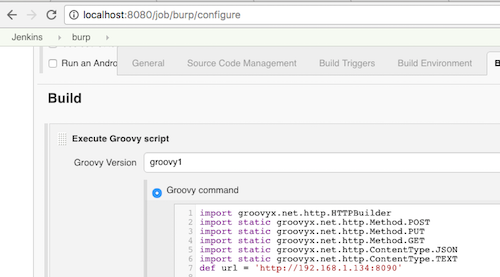
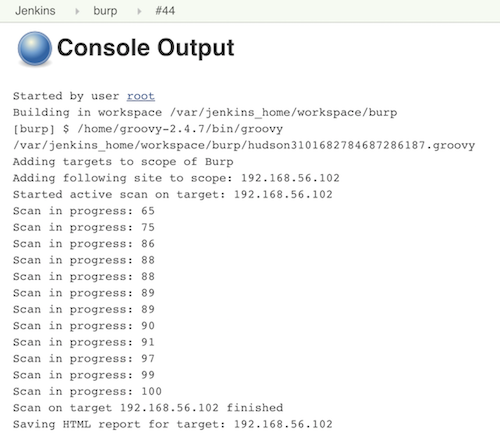
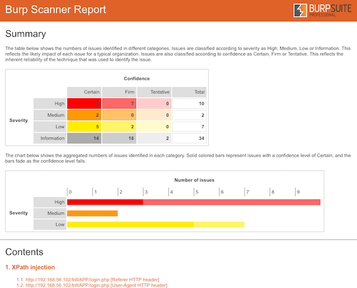
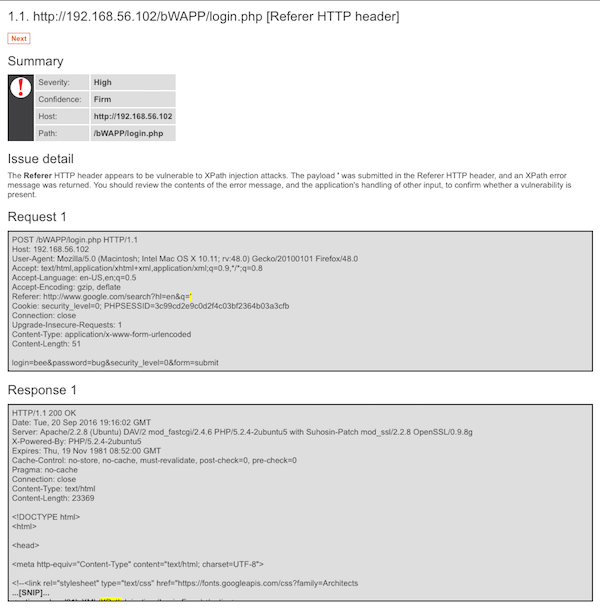

I am a big fan of automating security tests and lately I have been doing so a lot with the incredible REST API of OWASP ZAP. The process of automating security tests mainly consists of functional tests (in Selenium) being fed to the proxy of ZAP and afterwards performing an active scan on the proxy history. This combination of Selenium tests with ZAP has proven itself to be a solid success in many cases. You can read more about this set-up in my previous blogs ZAP automation part 1 and ZAP automation part 2.
But I am always on the lookout for new tools that can aid me in automation, and recently I found out that VMware has released a REST/JSON API endpoint to access the features of Burp Suite. I was already familiar with Burp Suite due to my experience as a penetration tester so I was excited to see if I could use it to automate Burp.
Interested as I was, I immediately had a look at it and installed it locally. I started to play around with the different endpoints and tried to see if I could create a similar implementation of automated security tests as in my previous blogs about security automation. My goal was to create an implementation similar to the illustration below:

At first glance the features it offers seems a bit disappointing, but we have to keep in mind that this project was only released recently. In a follow-up blog I will write on how to add new features to the existing API. The features they do offer however are well documented and easy to implement. The most important features one would require are available and ready for use. Finally the power of Burp Suite can be harnessed through the use of scripts and therefore be automated.

Below I wrote a small POC which does an active scan on sites that are found in the proxy history of Burp. In this example I've used BWAPP as the target application. After the active scan finishes the HTML report will be saved locally.
@Grab(group='org.codehaus.groovy.modules.http-builder', module='http-builder', version='0.7' )
import groovyx.net.http.HTTPBuilder
import static groovyx.net.http.Method.POST
import static groovyx.net.http.Method.PUT
import static groovyx.net.http.Method.GET
import static groovyx.net.http.ContentType.JSON
import static groovyx.net.http.ContentType.TEXT
def url = '<>'
// get proxy history and save unique to param sites
def path = '/burp/proxy/history'
apiCall(url, path, null)
def sites = data.messages.host
sites.unique()
// Check if proxy history is empty
if (!sites.isEmpty()) {
println "Adding targets to scope of Burp"
for (String item : sites) {
if (!item.endsWith("<>")) {
continue;
}
println "Adding following site to scope: " + item
path = '/burp/target/scope'
query = [url: 'http://'+item]
putCall(url, path, query)
}
// If multiple applicationURLs are found, perform Active Scan on all URLS
for (String item : sites) {
applicationURL = item
// Only scan sites which end with .<>
if (!applicationURL.endsWith("<>")) {
continue;
}
// start active scan
path = '/burp/scanner/scans/active'
query = [baseUrl: 'http://'+item]
postCall(url, path, query)
println 'Started active scan on target: ' + item
def responseText = "no responses yet"
def responseCode = 200
def maxRetries = 30 * 30
def retryNum = 0
// Poll status of scan
while (!responseText.toString().contains("100") && responseCode == 200) {
if (retryNum >= maxRetries) {
throw new RuntimeException("Active Scanner has not completed after XXX minutes. Exiting.")
}
//5 seconds wait time
sleep 5000
path = '/burp/scanner/status'
apiCall(url, path, null)
retryNum += 1
responseText = data.scanPercentage
println "Scan in progress: ${responseText}"
}
println 'Scan on target '+ item + ' finished'
println "Saving HTML report for target: " + item
def address = url + "/burp/report?reportType=HTML"
def data = new URL(address).getText()
//println address.toURL().text
def foo = "foobar"
File file = new File("<>"+item+".html")
file << data
}
}else{
println "No sites found in proxy history. Scan will not be started."
}
I've put all of this together in Jenkins. The Jenkins job kicks off Burp Suite and actively scans any host it found in its proxy history. I've installed the HTML publisher plugin to view the HTML report of Burp which I previously saved in the script.
Part of Jenkins configuration
Jenkins console output
Burp Suite's HTML report published in Jenkins
More detailed view of Burp Suite's report
I originally wrote this article for Securify B.V. Read more.